國際交流
日本北海道木工與家具產業實地考察
於 2025 年 7 月 6 日至 19 日前往日本北海道札幌、小樽及旭川等地，實地考察木工工坊、家具製造產業及相關博物館，探討永續木育教育、傳統木工工藝，以及其在 STEAM 學習與設計教育中的應用。
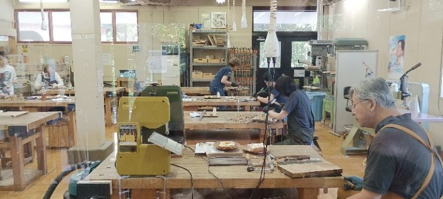
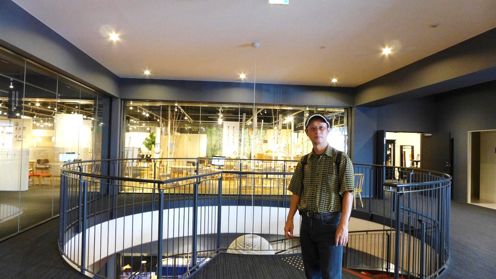
日本京都竹工藝產業田野調查
本次考察聚焦於傳統竹工藝的當代表現與技術創新，深入參訪京都代表性竹工坊、工藝職人工作室及文化機構。透過實地觀察與專家交流，探討竹工藝在科技應用、產業創新、文化保存及跨域整合等方面的實踐經驗。此次參訪提供臺灣推動永續竹設計、文化創意產業及教育創新的重要國際案例與參考依據。
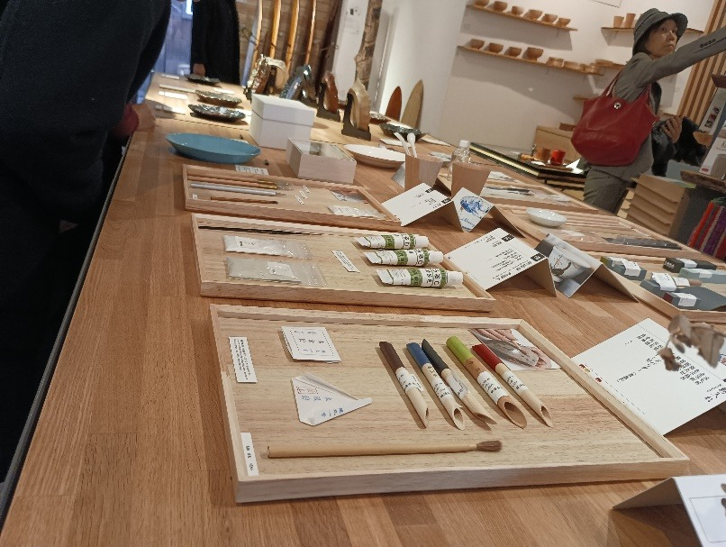
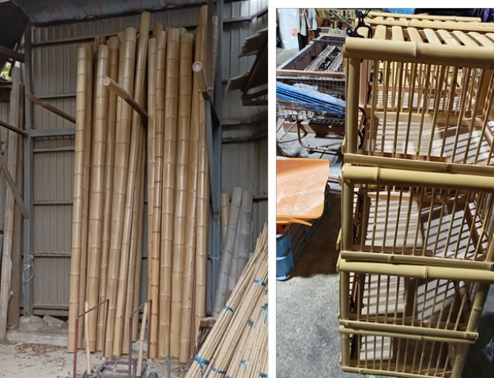
永續設計價值與應用訪問研究計畫
以德國特里爾應用科技大學（Trier University of Applied Sciences）為研究場域，探討聯合國永續發展目標（SDGs）導向之設計教育與課程發展。研究內容包括參與 Matthias Sieveke 教授設計工作室課程、觀察設計學院行政管理模式，以及推動設計、教育與地方社區之跨域合作。此外，在正式研究訪問前一週，率領國立臺北教育大學 10 位學生赴德國，參加（2024 年 6 月 10 日至 17 日）臺德國際竹設計工作坊（已結案）。
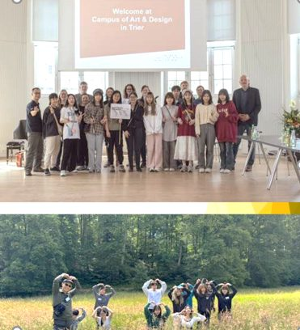
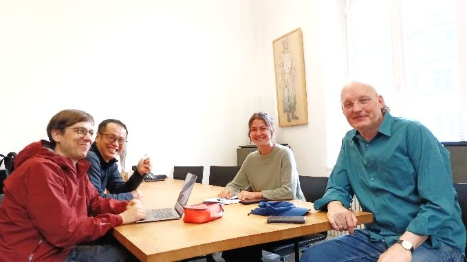
德臺國際竹設計工作坊
主持並舉辦德臺國際竹設計工作坊計畫，合作單位：國立臺北教育大學、明志科技大學、國立臺灣大學、德國特里爾應用科技大學；辦理地點：國立臺灣工藝研究發展中心；活動期間：2024 年 11 月 4 日至 9 日（6 天）；參與人數：共 51 人，包括學生 45 人及教師、專家 6 人，其中國立臺北教育大學 21 人、國立臺灣大學 2 人、明志科技大學 10 人、德國特里爾應用科技大學學生 12 人，以及教師與工藝專家 6 人，國立臺北教育大學與明志科技大學經費贊助，特此致謝（已結案）。
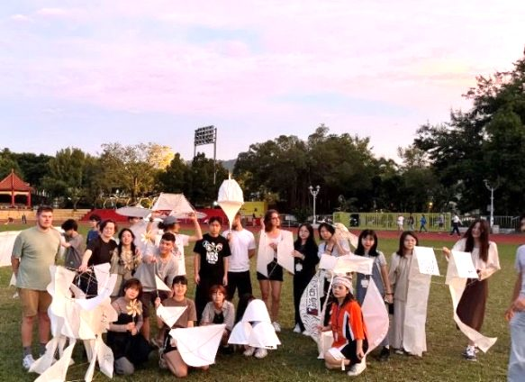
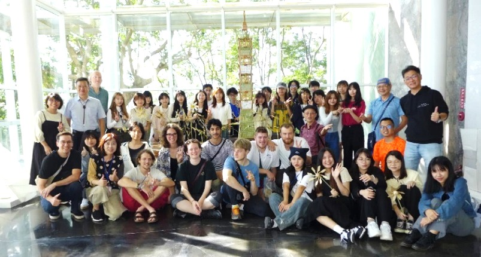
Z 世代數位生活體驗暨跨域人機互動設計實習計畫
合作單位：教育部學海築夢海外實習計畫暨 ASUS 新加坡設計中心。計畫研究團隊（5 位大學與碩士班同學），自 109 年 1 月中出發至新加坡 ASUS 電腦公司工業設計部，進行為期 1 個月的工作坊實習計畫（已結案）。
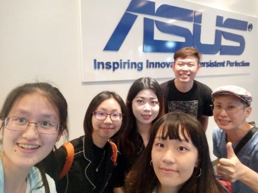
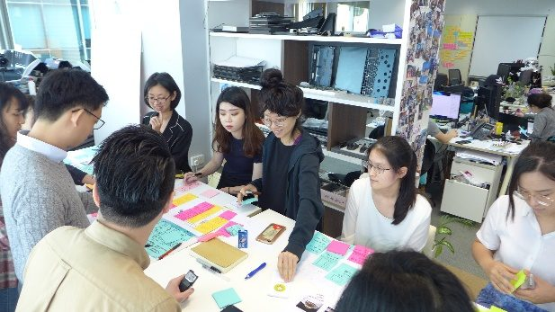
木育玩具開發與推廣
木育學堂 STEAM 創客與 SDGs 之小教實驗課程
結案中／國科會計畫 NSTC 112-2410-H-152-023-；NSTC 113-2410-H-152-009-MY2
2023 年 12 月：木育學堂 STEAM 創客與 SDGs 小學教案開發理念
進行小學生生活型態分析（圖 a），進行 STEAM 創客與 SDGs 素材與木育教案內容難度評估（圖 b），邀請專家學者對可能之 STEAM 創客與 SDGs 與教案內容進行審查，經由數次修正確認內容後進行教案正式之開發流程。
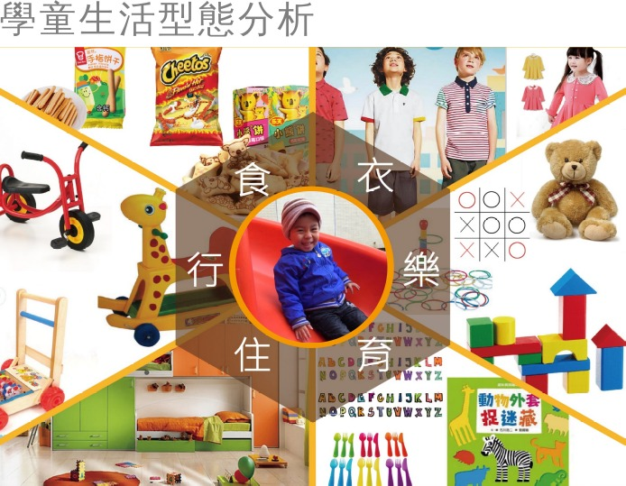
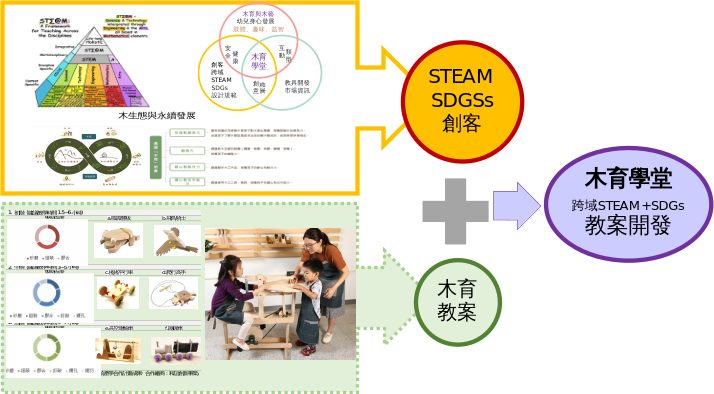
2024 年 5 月：完成融合 STEAM 設計木育玩具之教案開發
以木工六大加工技法為依據訂定學習目標開展設計，完成初、中、高三個階段的木育玩具材料包應用於國小教學；利用課程驗證，透過問卷評量開發玩具教案的學習成效（95 位小學同學參與）。
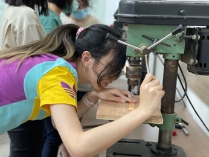
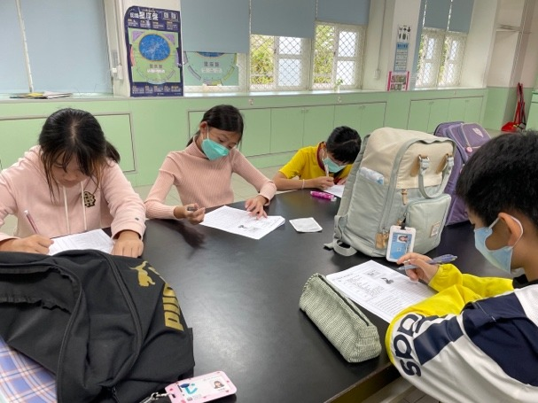
2026 年 7 月：升級計畫成果分享平台
配合木育學堂開發系列工作坊教案，結合更多合作社群及學校，免費分享研究成果，持續推廣木育 STEAM 教案。
童樂會──學童 STEAM 木育玩具設計與教具開發
國科會計畫 MOST 109-2410-H-152-003-；MOST 110-2410-H-152-012-MY2（已結案）
2021 年 3 月：STEAM 木工玩具種子教師體驗
STEAM 木工玩具與教案開發，進行教案問卷開發與評量，期能裨益小學教育。（共計 103 位大專同學參與）。
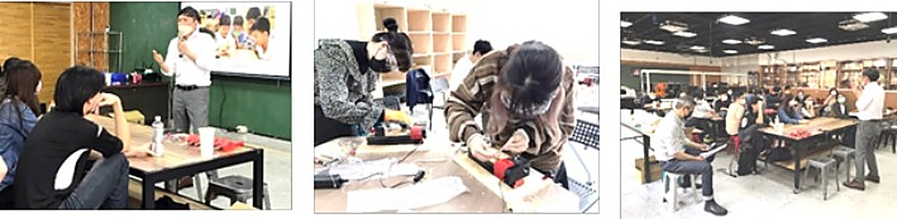
2023 年 6 月：優化後之 STEAM 木育教案
木陀螺教案、自動存錢筒教案（2022 年 8 月取得發明專利）與飛鳥教案。
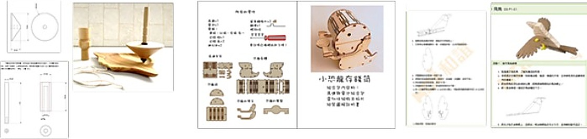
6 場木育 STEAM 玩具開發系列工作坊與講座
本年度配合木育 STEAM 玩具開發系列工作坊與講座，包括大專、小教木育 STEAM 工作坊、STEAM 教育專家講座，以及專家會議（超過 180 人次參與）。
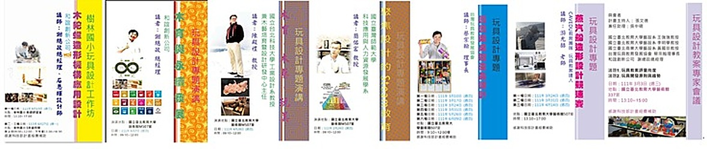
竹林場勘與竹材採集
為尋得適當竹材，團隊劉宗岳老師親赴阿里山海拔 1200 高度竹林場勘，陡坡採集竹材難度頗高，積極準備後續教案備料工作中。
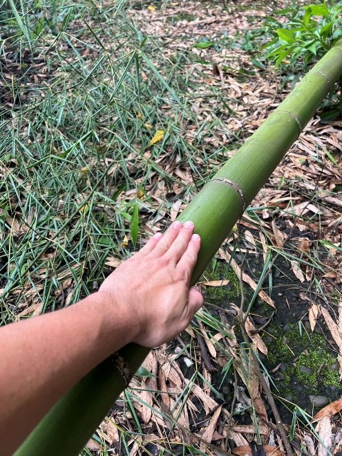
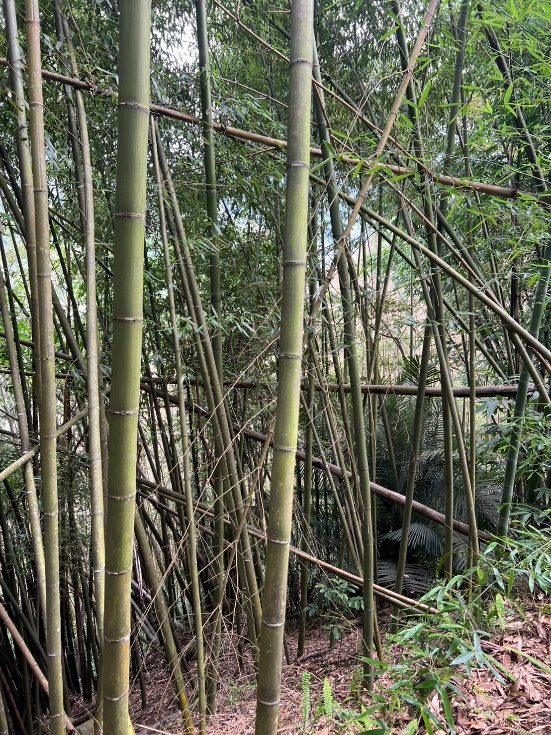
小竹琴親子體驗社區推廣活動
團隊劉宗岳老師於台中龍井社區耕耘多年，社區竹樂器體驗活動，今年度起與本計畫合作，進行相關教案研發與推廣。
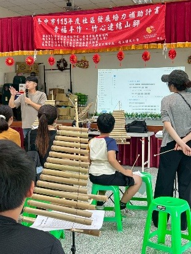
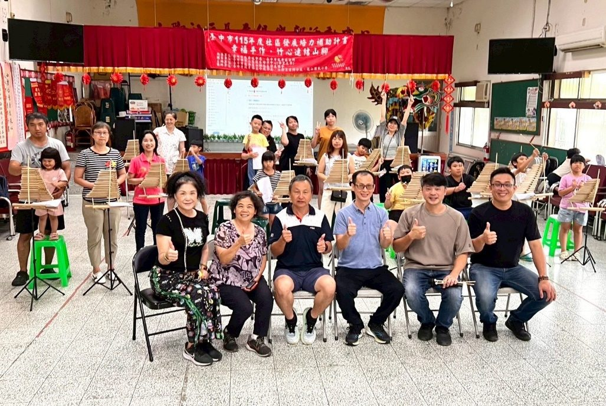
竹藝與設計實務工作坊
竹采藝品有限公司林琮棋經理，國立臺北教育大學藝設系，指導孟宗竹工藝品製作體驗與實作，3 小時（共 9 人）。
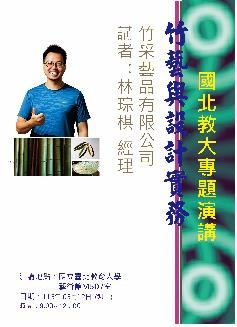
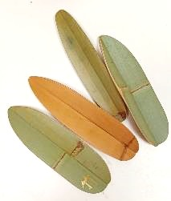
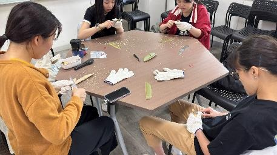
產學合作計畫成果
竹好聽──竹材創新童玩產品開發
國立臺灣工藝研究發展中心產學合作計畫。合作單位：采竹工藝社林群涵竹工藝師。完成資料蒐集、市場分析、工作坊，深入分析竹材複合運用的可能性，拓展童玩設計於跨域整合之發展潛力（已結案）。
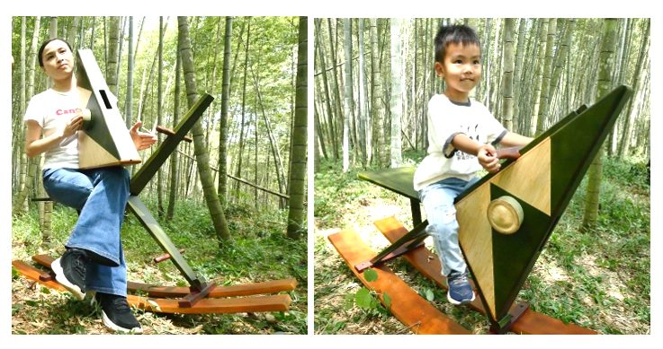
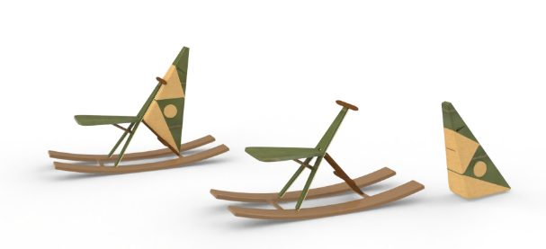
2025 年 11 月：獲 2025 年竹藝產品開發競賽首獎肯定
計畫成果衍伸共 5 件創作實體竹樂器設計作品；六音竹管拍筒琴（共同作者：張文德、劉宗岳、林琮棋），獲 2025 年竹藝產品開發競賽首獎／典藏（南投縣文化局主辦）／獎牌及獎金 8 萬元；其他 4 件作品（竹音箱鼓、竹手鼓、竹月鼓、竹圓鼓）獲入圍殊榮。
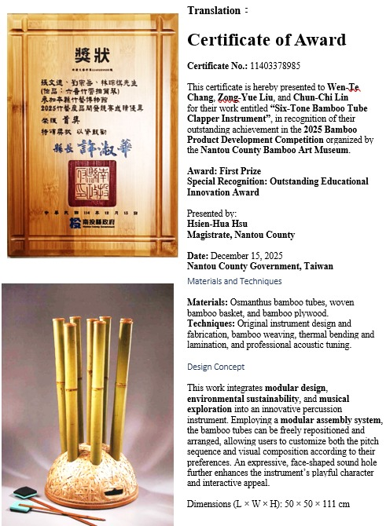
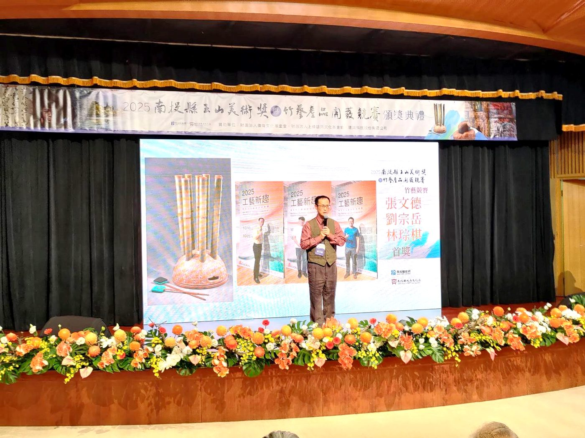
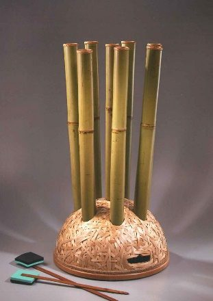
2025 年 8 月：工藝新趣計畫期末成果展參展
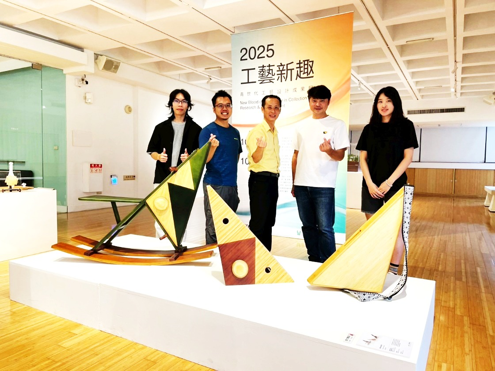
童智創客樂！體感創作玩具之設計與開發
國科會產學合作計畫，合作單位：國科會暨和誼創新公司。主要開發成果：a. STEAM 幼兒教案開發；b. STEAM 工具開發；c. STEAM 玩具設計（已結案）。
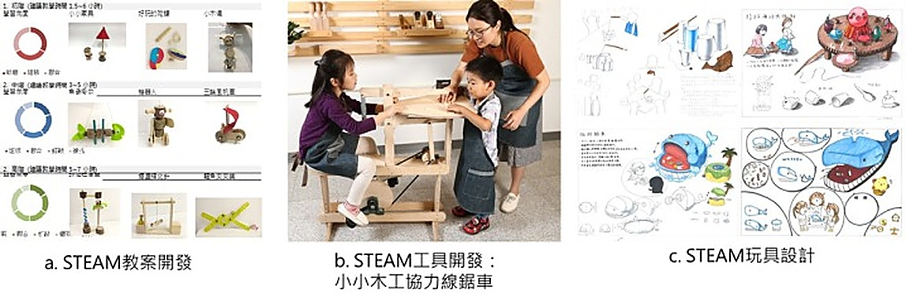
光寶貝 OLED 光照互動玩具設計
合作單位：工研院電光所。補助經費：2,650,000 元，前 2 年為 OLED 玩具開發提案，第 3 年延續前兩年研究成果，進行最終版設計優化與小量產製作（圖 a）。該設計已取得專利，共生產 40 套 OLED 互動玩具產品，獲工研院電光所高度肯定。以工研院電光所暨國立臺北教育大學名義，致贈衛生福利部北區兒童之家、藍迪基金會附設兒童之家、財團法人新竹市私立新竹仁愛兒童之家、聖方濟育幼院（圖 b），各八套 OLED 發光拼圖玩具組，深受獲贈單位喜愛（已結案）。
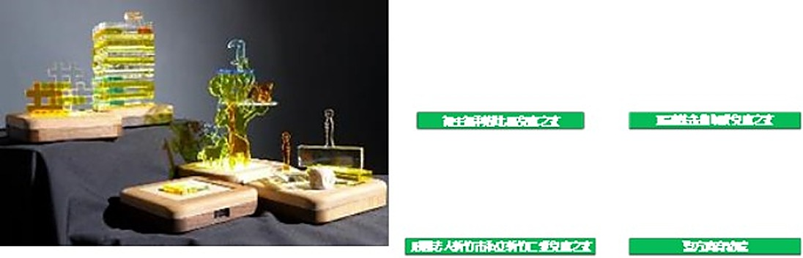
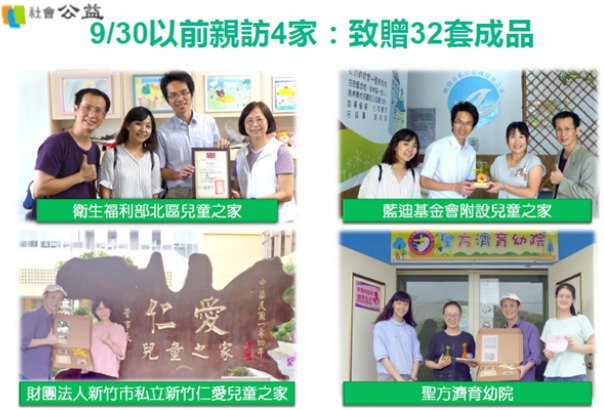